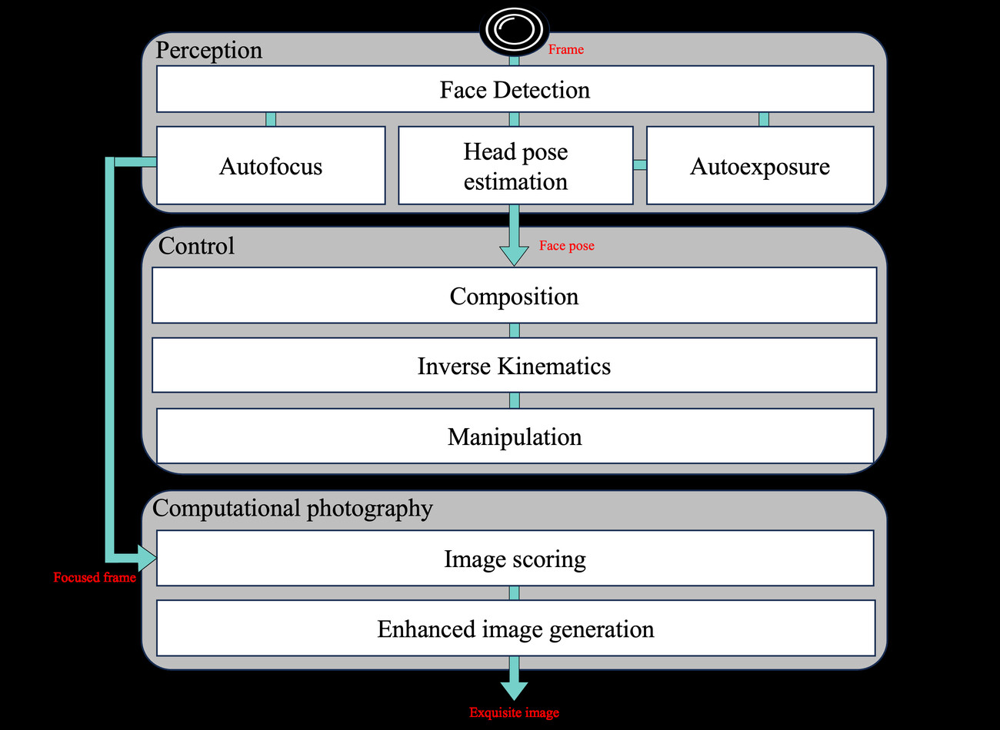
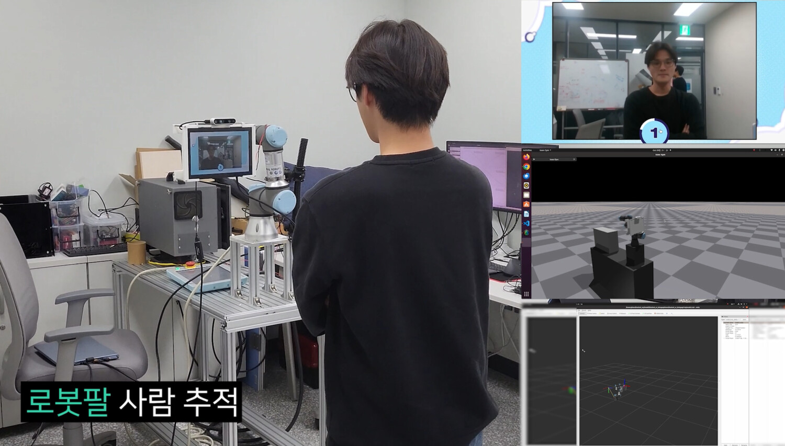
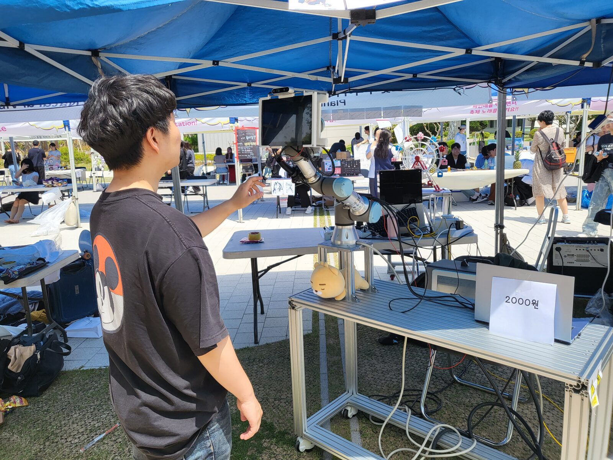
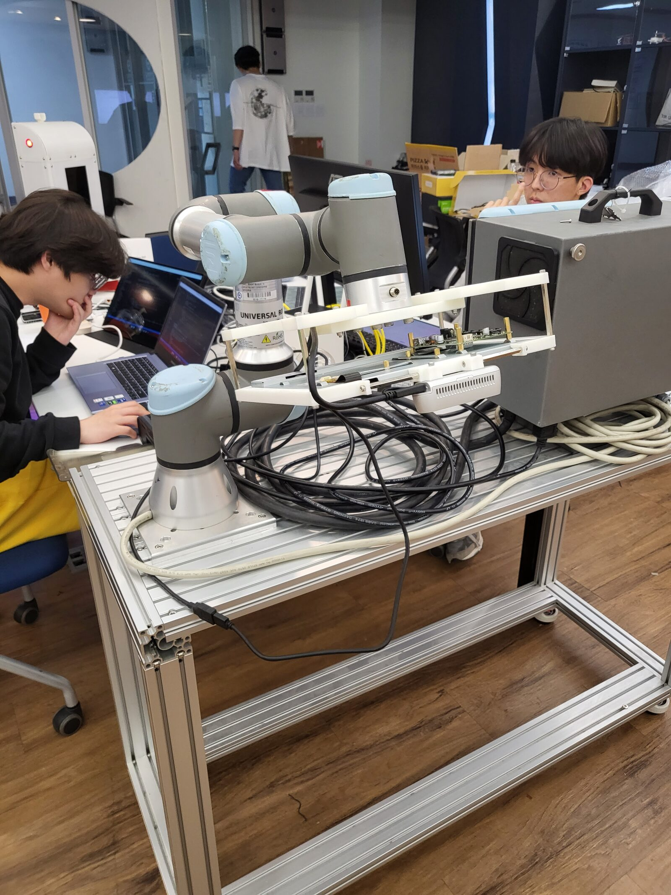
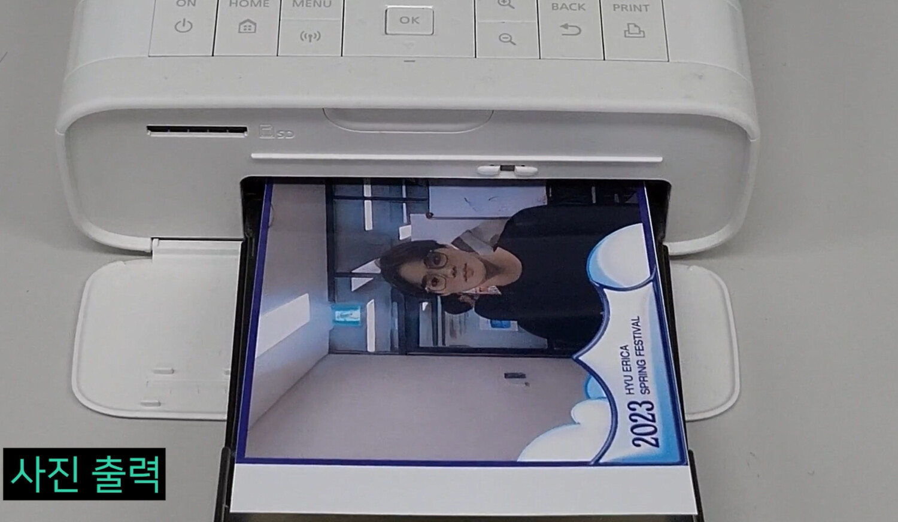
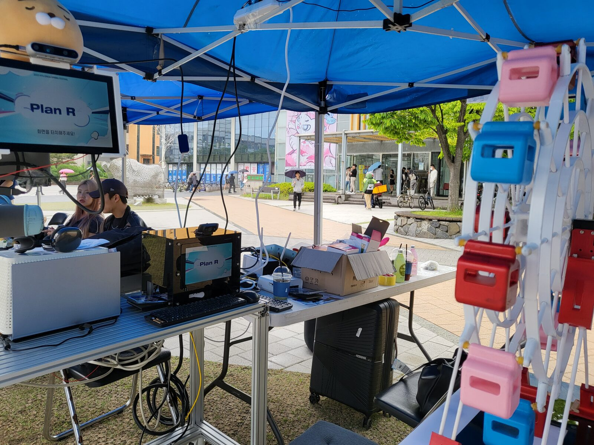
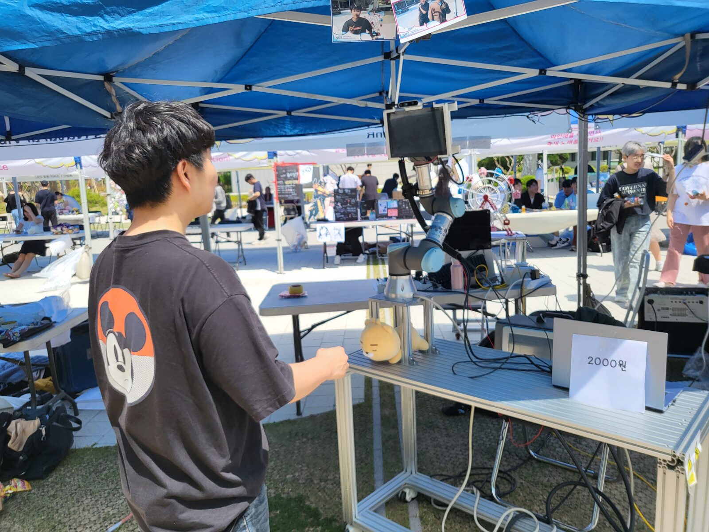
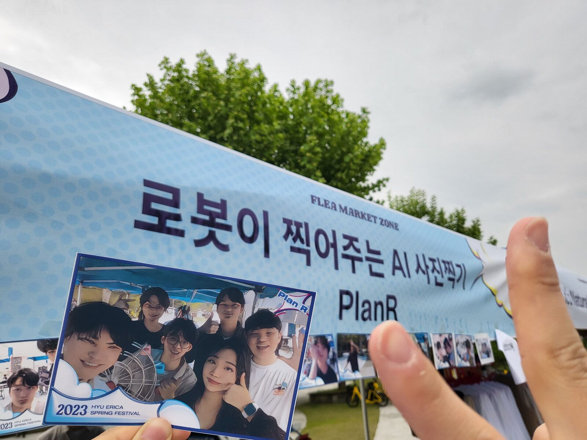

SnapBot
Enabling Dynamic Human-Robot Interactions for Real-Time Computational Photography

Abstract
Photography remains an expert area requiring the right focus, exposure, composition, and even post-processing. Yet robotic automation can enable precise camera manipulation, focus and exposure adjustment, camera composition, and post-processing by leveraging state-of-the-art computational photography. Existing proposals for robotic photography focus on adjusting camera angles for static portraits or developing image-evaluation metrics, thus falling short in capturing dynamic human-robot interactions. This paper describes the design and implementation of SnapBot, a human-robot interaction system designed specifically for computational photography. SnapBot dynamically detects face and pose for exposure and focus and interactively controls a robot arm for camera composition to perform image scoring and enhancing. As perception, control, and computational photography form an end-to-end pipeline, SnapBot promises a new future in which image focus, exposure, composition, and generation can be jointly optimized as a unified process. We implemented and deployed SnapBot on a UR3, demonstrating a mean image-quality score 1.51× that of the Aesthetic Visual Analysis (AVA) dataset. We also perform an ablation study to analyze the impact of each stage of SnapBot, both visually and quantitatively.
System Overview

Figure 2 — Overview of SnapBot. Perception detects the face in each camera frame and runs autoexposure, autofocus, and head-pose estimation. Control computes the camera composition from the subject's direction and drives the manipulator through inverse kinematics. Computational photography then scores and enhances the captured frame to generate the final image.
The SnapBot Pipeline
Detect, Expose & Focus on the Subject
A YOLOv8-face detector locates the subject in each RealSense D435 frame. SnapBot then runs autoexposure restricted to the facial region (keeping the face correctly exposed despite the low resolution it uses for real-time speed), a deep autofocus model to recover sharpness, and real-time head-pose estimation — 2D landmark localization matched against 2,223 pre-built pose samples via quadtree search.


Interactive Camera Composition
From the perceived facial direction vector, SnapBot computes an optimal camera composition (Algorithm 1) and drives the arm to it. A closed-loop, damped pseudo-inverse inverse-kinematics controller keeps the camera aimed at the moving subject while staying robust near singularities, and a moving-average filter smooths control inputs for stable motion and longer robot life.
Score & Enhance the Image
From a burst of shots, an Image Score Model (ISM) — trained on the AVA portrait dataset — ranks candidates on aesthetic criteria such as composition and lighting and filters out blurry or poorly framed frames. The selected image is then refined by an Enhanced Image Generative Model (EIGM), which applies exposure compensation, hue/saturation and color-space adjustment, tone mapping, and gamma correction for a professional-grade finish.
Results

Figure 4 — Component-wise comparison. (a) before/after autofocus; (b) a fixed camera vs. robot-arm composition; (c) before/after the Image Score Model (ISM); (d) before/after the Enhanced Image Generative Model (EIGM).
| Method | Score | Balancing Elements | Depth of Field | Lighting | Object |
|---|---|---|---|---|---|
| AVA dataset | 0.5189 | 0.0341 | 0.1152 | 0.0568 | 0.0941 |
| SnapBot (full) | 0.7852 | 0.8085 | 0.7318 | 0.7799 | 0.6360 |
| SnapBot w/o EIGM | 0.5521 | 0.7002 | 0.5910 | 0.5832 | 0.4217 |
| SnapBot w/o ISM, EIGM | 0.3544 | −0.062 | 0.1144 | −0.1943 | −0.1030 |
Table 1. Mean image-quality score and per-attribute metrics for the AVA dataset vs. SnapBot, with ISM/EIGM ablations (higher is better). The full pipeline scores 0.7852 — a 1.51× improvement over AVA — and removing the EIGM and ISM stages degrades quality across every attribute.
Video
SnapBot end to end: perception & tracking, interactive arm composition, and image scoring & enhancement. Open in a new tab
Live Deployment
Beyond the lab, SnapBot ran as an interactive robot-photographer booth at the 2023 Korea SW Talent Festival and the HYU ERICA Spring Festival — photographing visitors and handing them an enhanced, printed portrait.

A visitor is photographed live by SnapBot — the arm tracks and composes the shot on its own.

The SnapBot platform during development — the manipulator and eye-in-hand camera on a custom rig.

The final image is delivered on the spot — printed as a keepsake during the live demo.

The booth, with a custom 3D-printed wheel displaying freshly printed portraits.

Running the full perception–control–photography stack live at the festival.

“A photo studio operated by a robot” — the team at the 2023 SW Talent Festival.
Acknowledgments
This work was supported in part by the National Research Foundation of Korea (NRF) grants 2022R1G1A1003531 and 2022R1A4A3018824, and by the Institute of Information & Communications Technology Planning & Evaluation (IITP) grant IITP-2024-2020-0-01741, funded by the Korea government (MSIT).
BibTeX
@inproceedings{choi2024snapbot,
author = {Choi, Chanyeok and Kim, Jeonghan and Nam, Yunjae and Lee, Youngmoon},
title = {Snapbot: Enabling Dynamic Human-Robot Interactions for
Real-Time Computational Photography},
booktitle = {Companion of the 2024 ACM/IEEE International Conference on
Human-Robot Interaction (HRI '24)},
series = {HRI '24},
year = {2024},
pages = {327--331},
address = {Boulder, CO, USA},
publisher = {Association for Computing Machinery},
doi = {10.1145/3610978.3640712}
}